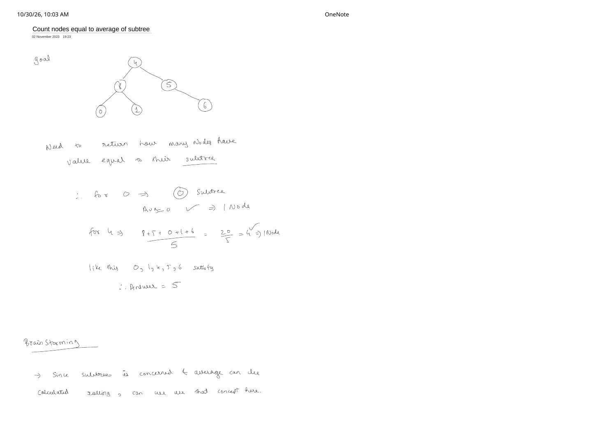
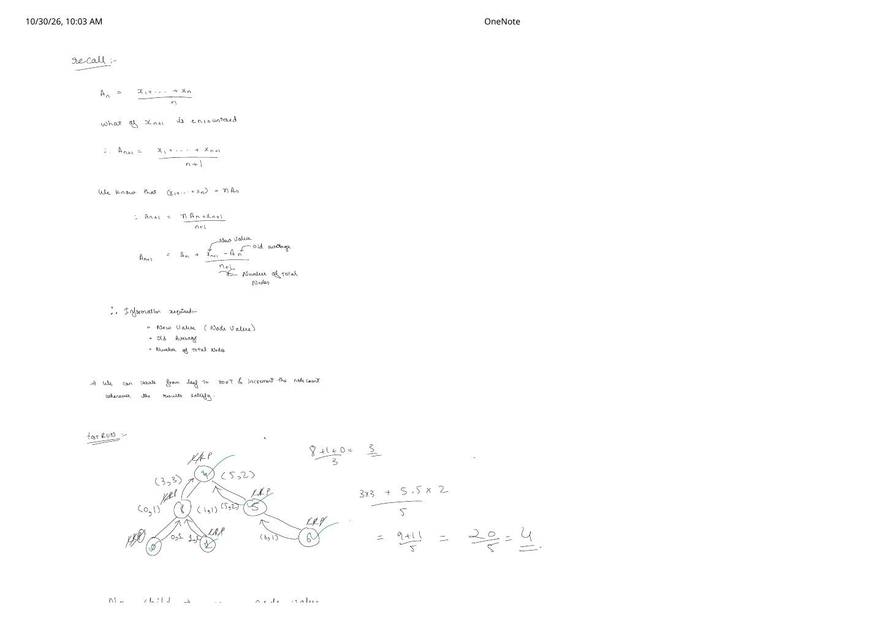
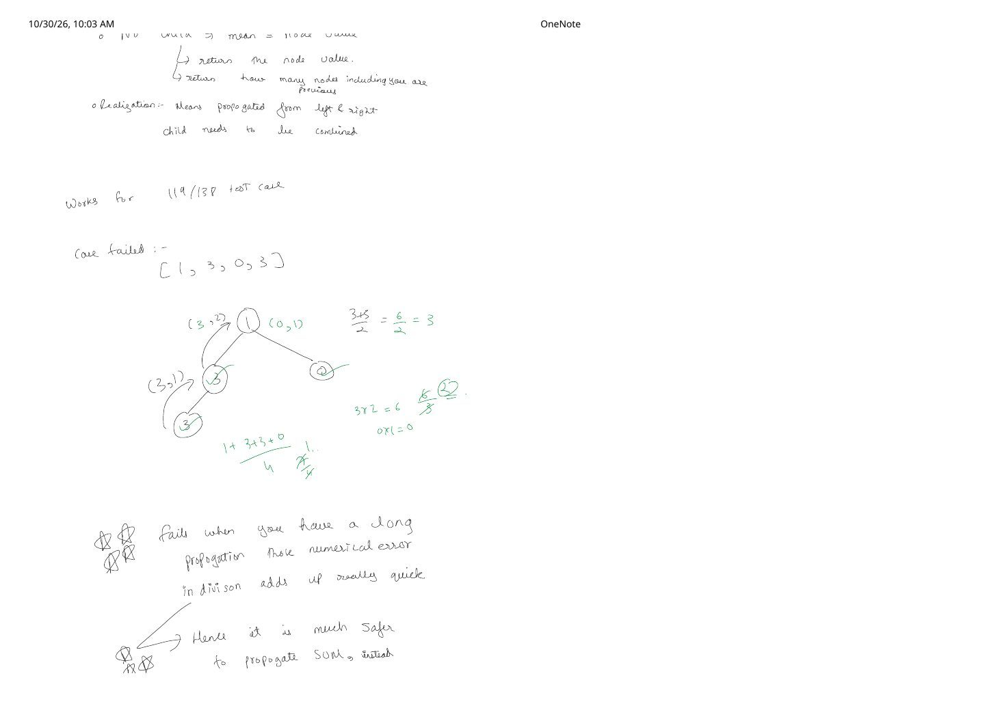

LC 2265: Count Nodes Equal to Average of Subtree — Why Rolling Mean Fails at 119/138
Expanded from handwritten competitive coding study notes (02_Count_nodes_equal_to_average_of_subtree.pdf, Pages 1–4) · View original handwritten pages
1. Problem Goal & Sample Tree Walkthrough
Given the root of a binary tree, count how many nodes u have a value equal to the rounded-down integer average of the values in u's subtree (including u itself):
[4, 8, 5, 0, 1, null, 6] from Pages 1–2: Leaves 0, 1, 6 trivially match, 5 has $\lfloor (5 + 6)/2 \rfloor = 5$, and root 4 has $\lfloor 24/6 \rfloor = 4$, giving 5 matching nodes.2. First Brainstorm: Propagating a Rolling Mean Bottom-Up
Recomputing subtree sums from scratch at every node would take $\mathcal{O}(n^2)$ on a skewed tree. On Page 2 of the handwritten notes, the initial brainstorm recalls the online / rolling average identity:
Generalizing to a binary tree node with left subtree $(A_L, n_L)$ and right subtree $(A_R, n_R)$, we reconstruct the combined mean as:
On the sample tree [4, 8, 5, 0, 1, null, 6], this appears to work cleanly: node 8 returns $(3.0, 3)$, node 5 returns $(5.5, 2)$, and root 4 computes $(3.0 \times 3 + 5.5 \times 2 + 4) / 6 = (9 + 11 + 4) / 6 = 4.0$!
3. What Went Wrong at Test Case 119 / 138?
When submitted, the rolling-mean approach passed 119 out of 138 test cases—and then failed! Look at the two failure modes documented on Page 3 of the notes:
Why Propagating (mean, count) Breaks Precision
- If
meanis truncated to an integer early: On the counterexample tree[1, 3, 0, 3](or whenever a child has a non-integer average like $5.5$ truncated to $5$), reconstructing $n_R \cdot \lfloor A_R \rfloor$ loses the remainder $(5 \times 2 = 10 \ne 11)$, corrupting every ancestor's average! - Even in IEEE-754
doublefloating-point arithmetic: Division by $3, 6, 7, 11, \dots$ produces repeating binary fractions ($\text{e.g., } 1/3 = 0.010101\dots_2$). Over a deep chain of hundreds of nodes ($N \le 1000$), multiplying $n_L \cdot A_L$ and dividing again accumulates rounding drift such as $3.9999999999999996$, whichint()/math.floor()brutally truncates down to3instead of4!
Golden Rule from Page 3–4 of the Notes
Never propagate lossy quotients when exact numerators and denominators fit in registers! Since $N \le 1000$ and $\text{node.val} \le 1000$, the maximum possible subtree sum across the entire tree is $1000 \times 1000 = 10^6$—well within a standard 32-bit signed integer. Propagate exact (sum, count) bottom-up and perform integer division sum / count once per node with zero precision loss.
4. Optimal Post-Order DFS ($\mathcal{O}(n)$ Time, $\mathcal{O}(h)$ Space)
A single post-order traversal visits left and right children first, adds their exact integer sums and node counts, tests totalSum / totalCount == node->val using exact integer floor division (since all node values are non-negative integers in $[0, 1000]$), and returns {totalSum, totalCount} to its parent:
// LC 2265: Count Nodes Equal to Average of Subtree — Exact (sum, count) Post-Order DFS
class Solution {
int matchingNodes = 0;
pair<int, int> dfs(TreeNode* node) {
if (!node) return {0, 0};
auto [leftSum, leftCnt] = dfs(node->left);
auto [rightSum, rightCnt] = dfs(node->right);
int totalSum = leftSum + rightSum + node->val;
int totalCnt = leftCnt + rightCnt + 1;
if (totalSum / totalCnt == node->val) {
++matchingNodes;
}
return {totalSum, totalCnt};
}
public:
int averageOfSubtree(TreeNode* root) {
matchingNodes = 0;
dfs(root);
return matchingNodes;
}
};class Solution:
def averageOfSubtree(self, root: Optional[TreeNode]) -> int:
ans = 0
def dfs(node: Optional[TreeNode]) -> tuple[int, int]:
nonlocal ans
if not node:
return 0, 0
l_sum, l_cnt = dfs(node.left)
r_sum, r_cnt = dfs(node.right)
tot_sum = l_sum + r_sum + node.val
tot_cnt = l_cnt + r_cnt + 1
if tot_sum // tot_cnt == node.val:
ans += 1
return tot_sum, tot_cnt
dfs(root)
return ansFrom the Handwritten Notes
Expand all four original handwritten pages below to follow the complete arc from problem setup and rolling-mean derivation to the 119/138 precision realization:
View original note — 02_Count_nodes_equal_to_average_of_subtree.pdf (Page 1: Tree example & rolling-average brainstorm)


02_Count_nodes_equal_to_average_of_subtree.pdf Page 1: Goal check on [4, 8, 5, 0, 1, null, 6] giving answer 5, and initial idea to use a rolling average.View original note — 02_Count_nodes_equal_to_average_of_subtree.pdf (Page 2: Rolling-mean algebra & bottom-up dry run)


02_Count_nodes_equal_to_average_of_subtree.pdf Page 2: Deriving $A_{n+1} = A_n + \frac{x_{n+1} - A_n}{n + 1}$ and dry-running (mean, count) up the example tree.View original note — 02_Count_nodes_equal_to_average_of_subtree.pdf (Page 3: 119/138 failure analysis & switch to SUM)


02_Count_nodes_equal_to_average_of_subtree.pdf Page 3: Debugging why long division propagation accumulates numerical error ("Works for 119/138 test case") and switching to exact SUM.